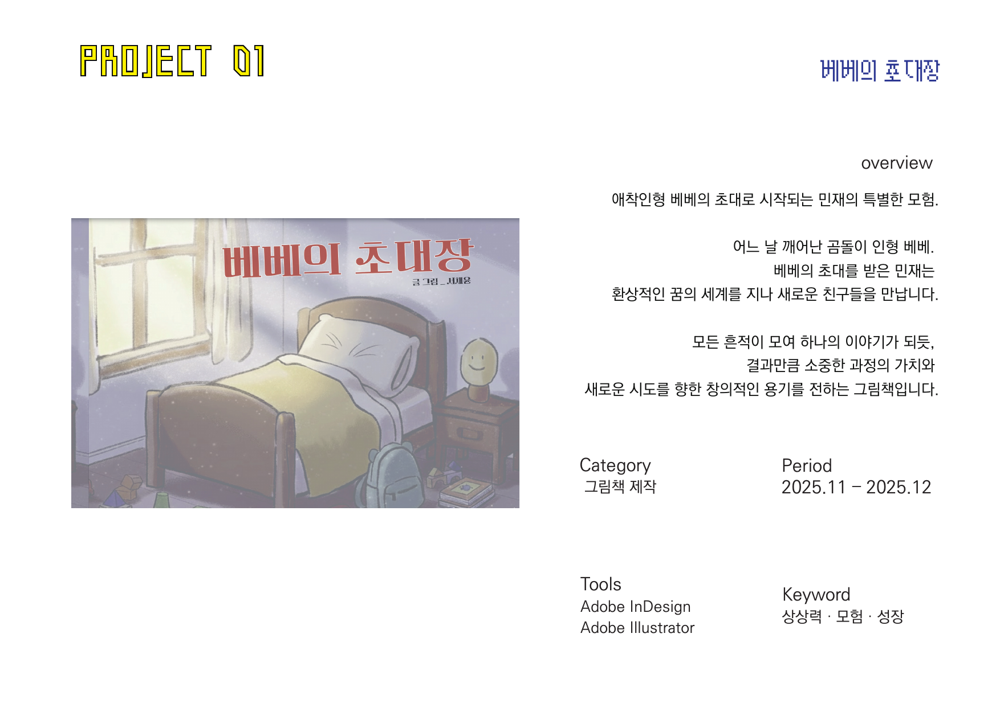
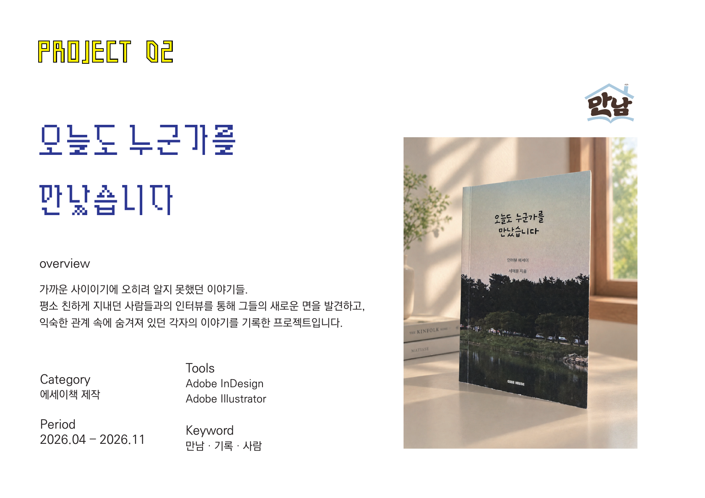

포트폴리오 / 2026데스크톱에서 작업을 골라 둘러보세요
작업 모음 · 2024—2026
작은 이야기가
작은 이야기가
머무는 곳.
그림책과 일러스트레이션
작업 아이콘을 눌러 둘러보세요
아래로 내려 작품 보기
작업 014—10쪽
베베의 초대장
한 장씩 넘길 때마다 새로운 장면이 열리는 그림책입니다. 따뜻한 색과 손으로 그린 선을 따라, 베베가 초대받은 특별한 하루를 함께 걸어갑니다.
4쪽부터 10쪽까지 보기
베베의
초대장
상상을 부르는 그림책

4—10쪽베베의 초대장
베베의 초대장
초대장을 펼쳐보세요.
그림책 4쪽부터 10쪽까지
한 페이지씩 모았습니다.
오늘도
누군가를
만났습니다 하루에 담긴 여러 만남
만났습니다 하루에 담긴 여러 만남

11—20쪽오늘도 누군가를 만났습니다
오늘도 누군가를 만났습니다
만남의 장면들.
그림책 11쪽부터 20쪽까지
천천히 넘겨보세요.
내 소개
손끝에서 시작해
손끝에서 시작해
마음에 닿는 이야기.
종이의 질감과 다정한 색, 작은 표정 하나까지 오래 들여다봅니다. 다시 펼쳐 보고 싶은 이야기와 이미지를 만듭니다.
프로젝트 이야기 나누기그림 그리고
이야기 만드는 사람
이야기 만드는 사람
●
나만의 작은 데스크톱에 담은 포트폴리오